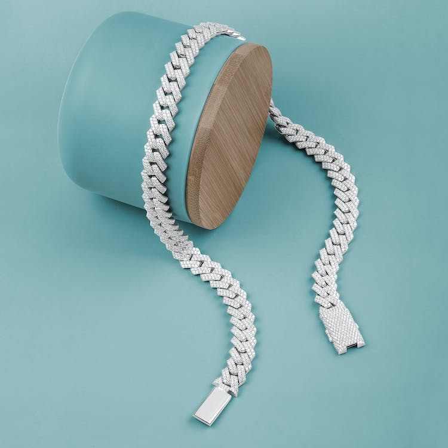

Feature



Our Story
Meticulously crafted, effortlessly worn.
A signature technique of Carolina Bucci first mastered in the family workshops in the 19th century, the Florentine Finish is a precise, time-consuming treatment with a beautiful reward. Every part of the gold is hand-beaten with a diamond-tipped tool, leaving faceted indentations on the surface and subtle sparkle that lasts.
Discover our collection of 18k gold Hoops & Links in our signature Florentine
Finish. Transform day-to-day earrings into swinging, sparkling statements.
“I am, at heart, fascinated by the possibilities of gold, and I love to
make it do things that it’s not supposed to — and in the case of our
Florentine Finish, it's glimmer like diamonds."
Florentine Finish Medium Flat
hoops and CFF Rings — all 18k
gold,all handmade in our Florence
Atelier